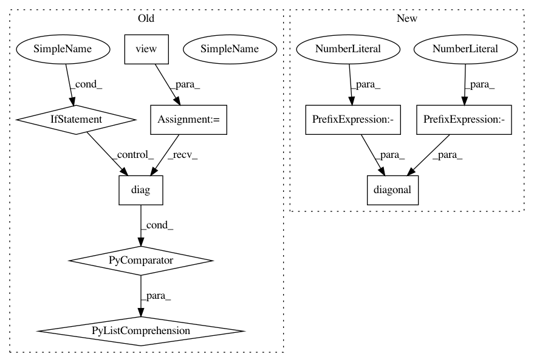

b821df469dbf44ab1f1f3564c454eb2787cd412b,test/kernels/test_rbf_kernel.py,TestRBFKernel,test_ard,#TestRBFKernel#,17
Before Change
// batch_dims
actual = scaled_a.transpose(-1, -2).unsqueeze(-1) - scaled_b.transpose(-1, -2).unsqueeze(-2)
actual = actual.pow(2).mul_(-0.5).exp().view(2, 2, 2)
res = kernel(a, b, batch_dims=(0, 2)).evaluate()
self.assertLess(torch.norm(res - actual), 1e-5)
// batch_dims and diag
res = kernel(a, b, batch_dims=(0, 2)).diag()
actual = torch.cat([actual[i].diag().unsqueeze(0) for i in range(actual.size(0))])
self.assertLess(torch.norm(res - actual), 1e-5)
def test_ard_batch(self):
After Change
// batch_dims and diag
res = kernel(a, b, batch_dims=(0, 2)).diag()
actual = actual.diagonal(dim1=-1, dim2=-2)
self.assertLess(torch.norm(res - actual), 1e-5)
def test_ard_batch(self):
a = torch.tensor([[[1, 2, 3], [2, 4, 0]], [[-1, 1, 2], [2, 1, 4]]], dtype=torch.float)
In pattern: SUPERPATTERN
Frequency: 3
Non-data size: 9
Instances
Project Name: cornellius-gp/gpytorch
Commit Name: b821df469dbf44ab1f1f3564c454eb2787cd412b
Time: 2019-04-11
Author: gpleiss@gmail.com
File Name: test/kernels/test_rbf_kernel.py
Class Name: TestRBFKernel
Method Name: test_ard
Project Name: cornellius-gp/gpytorch
Commit Name: fe083e2b64b1db37439e753f0e4c5d674b1d6aa5
Time: 2019-06-23
Author: cs15btech11043@iith.ac.in
File Name: gpytorch/priors/lkj_prior.py
Class Name: LKJPrior
Method Name: log_prob
Project Name: cornellius-gp/gpytorch
Commit Name: 0f8802fba8f55cd66300017fdf9b7189183ff9d5
Time: 2019-04-12
Author: gpleiss@gmail.com
File Name: test/kernels/test_rbf_kernel.py
Class Name: TestRBFKernel
Method Name: test_ard